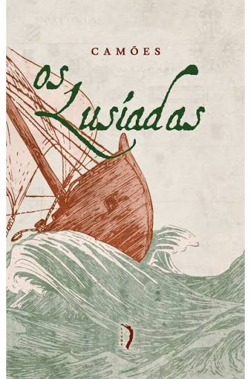
Os Lusíadas
Luís de Camões
O Classicismo surgiu durante o Renascimento e buscou recuperar os valores culturais da Antiguidade Greco-Romana. A razão, o equilíbrio e a valorização do ser humano tornaram-se princípios fundamentais da produção artística. O movimento nasceu na Itália, nos séculos XIV e XV, com nomes como Petrarca, que renovou a poesia amorosa e o soneto, e se espalhou pela Europa. Em vez de explicar o mundo apenas pela fé, como na Idade Média, os autores passaram a ver o ser humano como centro de interesse (antropocentrismo), capaz de conhecer, criar e transformar a realidade. Daí a admiração pelos modelos clássicos de Homero, Virgílio e Horácio e o uso constante da mitologia greco-latina.
Em Portugal, o Classicismo é situado entre 1527 e 1580. O ano inicial marca a volta de Sá de Miranda da Itália, trazendo a chamada "medida nova": o soneto e o verso decassílabo, que substituíram a "medida velha" (as redondilhas das cantigas medievais). O ano final corresponde à morte de Luís de Camões e ao início da União Ibérica. Os principais autores foram Sá de Miranda, Camões, Antônio Ferreira e Bernardim Ribeiro, enquanto Gil Vicente é visto como figura de transição, ainda ligado ao teatro medieval.
A obra central do período é Os Lusíadas (1572), epopeia de Camões que celebra a viagem de Vasco da Gama e a expansão marítima portuguesa, mas que também revela preocupação com a decadência moral e política do país. Na literatura, o ideal clássico se traduz na busca pela perfeição formal, pela clareza e pelo equilíbrio entre emoção e razão, com o cultivo do soneto, da ode, da écloga, da elegia e da epopeia. No Brasil, esse mesmo intervalo corresponde ao Quinhentismo, quando o território era uma colônia recém-explorada e ainda não havia produção literária própria.
O período foi marcado pelo fortalecimento das monarquias nacionais e pelas Grandes Navegações, que expandiram o conhecimento geográfico e cultural europeu. Os reis passaram a concentrar poder, enfraquecendo a fragmentação feudal, e a Coroa portuguesa tornou-se protagonista da expansão marítima. Portugal era uma monarquia absolutista, com o poder concentrado no rei e apoiado pela nobreza e pelo clero. Durante o século XVI, a Coroa financiou viagens, controlou o comércio com o Oriente e organizou a colonização do Brasil, com as capitanias hereditárias (1534) e o governo-geral (1549).
O reinado de D. Manuel I (1495-1521) representou o auge dos Descobrimentos, com a chegada à Índia em 1498 e ao Brasil em 1500. Já D. João III (1521-1557) reorganizou a Universidade em Coimbra, chamou os jesuítas e consolidou a presença portuguesa no Atlântico e no Oriente, mas também fortaleceu o controle religioso. A Reforma Protestante, iniciada por Lutero em 1517, dividiu a Europa cristã, e a Igreja Católica respondeu com a Contrarreforma: o Concílio de Trento (1545-1563), a Companhia de Jesus e a Inquisição, instalada em Portugal em 1536. Esse controle passou a vigiar livros e ideias, influenciando a circulação do conhecimento e a produção cultural.
O fim do período foi turbulento. D. Sebastião (1557-1578), jovem rei movido pelo ideal de cruzada, morreu na batalha de Alcácer-Quibir, no Marrocos, sem deixar herdeiro. Seu tio-avô, o cardeal D. Henrique, reinou por pouco tempo e, com a morte dele, Filipe II da Espanha reivindicou o trono e foi aclamado rei de Portugal em 1580. Começava a União Ibérica, que durou até 1640 e marcou a perda da independência portuguesa.
O crescimento do comércio e da burguesia impulsionou o desenvolvimento das cidades e favoreceu a difusão das ideias renascentistas. A economia portuguesa seguia o modelo mercantilista, no qual o Estado intervinha fortemente e controlava monopólios. A Coroa comercializava especiarias, ouro, marfim e, mais tarde, açúcar, com pontos de apoio como Goa (conquistada em 1510) e Malaca (1511). Lisboa transformou-se em um grande porto, por onde passavam mercadorias e viajantes de vários lugares do mundo.
A riqueza, porém, era frágil. O país dependia demais do comércio ultramarino e investia pouco na agricultura e na produção interna. A Coroa gastava muito com a corte e com a manutenção do império e acabou se endividando com banqueiros estrangeiros. Nas décadas finais do século, as dificuldades se agravaram, e a derrota em Alcácer-Quibir completou o quadro de crise que antecedeu a União Ibérica.
A sociedade era hierarquizada. A nobreza vivia de rendas, cargos e do serviço ao rei, na guerra e na navegação. O clero tinha grande poder, sobretudo com o avanço da Inquisição. A burguesia mercantil enriquecia com o comércio, mas não tinha poder político proporcional à sua riqueza, e parte dela era formada por cristãos-novos, judeus convertidos que sofriam desconfiança e perseguição. O povo, composto por camponeses, artesãos e marinheiros, levava uma vida difícil. A invenção da imprensa por Gutenberg, por volta de 1450, ajudou a ampliar o acesso aos livros e ao conhecimento. No Brasil, a economia colonial já se organizava em torno do açúcar, produzido com trabalho escravo, primeiro de indígenas e depois de africanos.

Luís de Camões
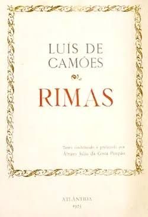
Luís de Camões
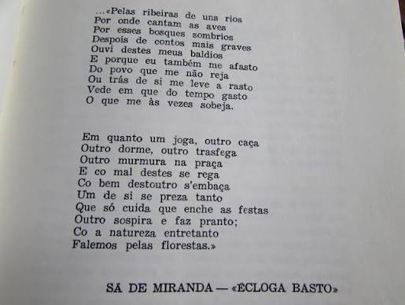
Sá de Miranda
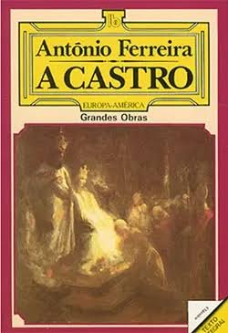
Antônio Ferreira
Narrativas grandiosas em verso que celebram os feitos heroicos e a história de uma nação. Exemplo máximo: Os Lusíadas.
Composições em verso focadas no amor, na contemplação e na filosofia. Utiliza formas clássicas como o soneto (medida nova).
Dramas clássicos inspirados nos moldes greco-romanos, estruturados em atos e focados no conflito moral e no destino humano.
Textos em verso de caráter pessoal, epistolar ou lamentatório, usados para refletir sobre a moralidade e os costumes da época.
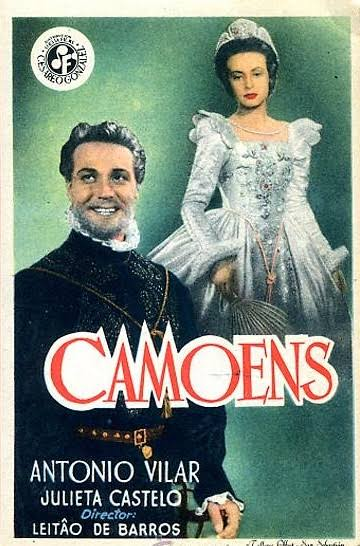
1946 • Dir. José Leitão de Barros
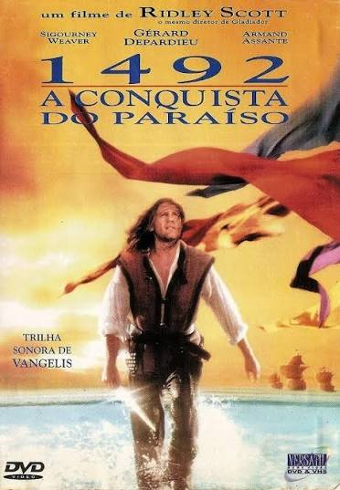
1992 • Dir. Ridley Scott
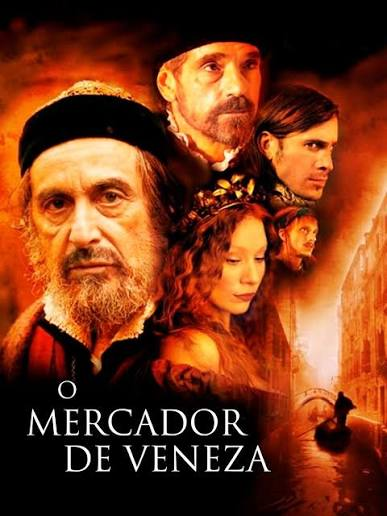
2004 • Dir. Michael Radford
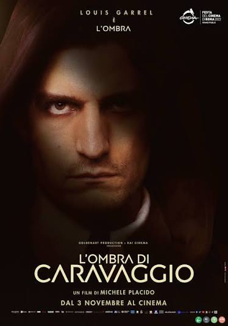
2022 • Dir. Michele Placido
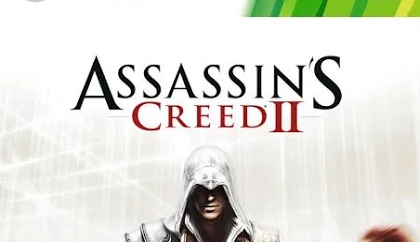
2009 • Ubisoft
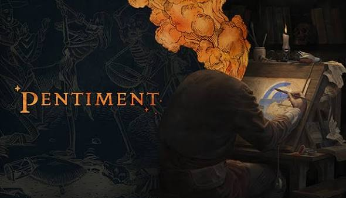
2022 • Obsidian Entertainment
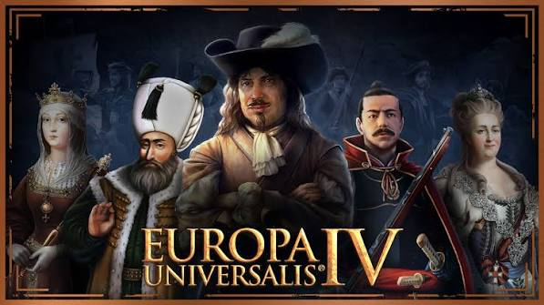
2013 • Paradox Development
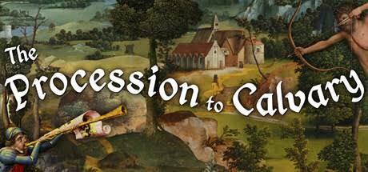
2020 • Joe Richardson
"Os Lusíadas", de Luís de Camões, é considerado o maior poema épico da língua portuguesa e narra a viagem de Vasco da Gama às Índias, exaltando as conquistas marítimas portuguesas.